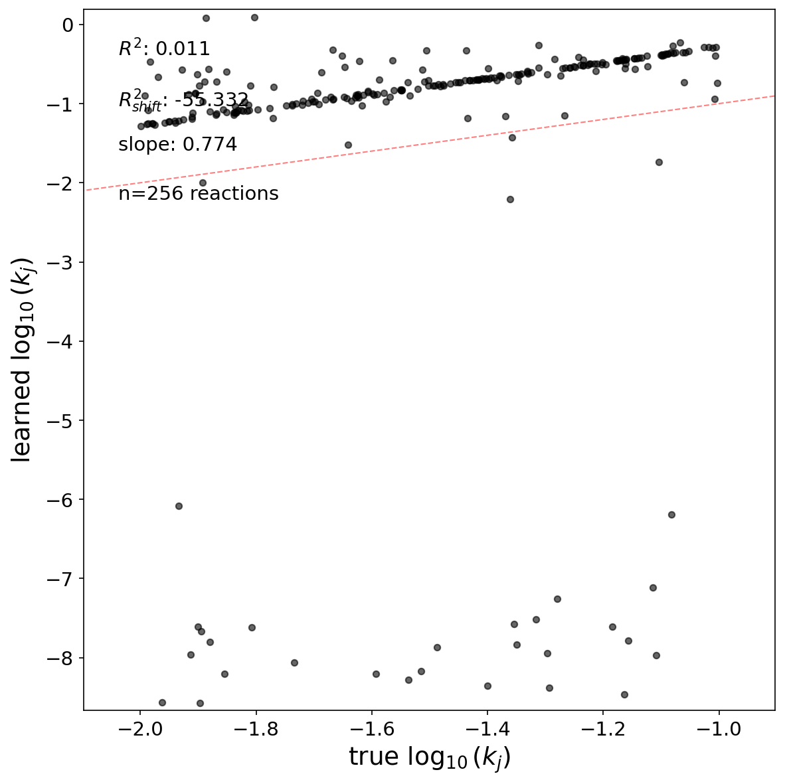

The LLM-driven exploration engine is running on the high-rank oscillatory regime (activity rank $$50): 100 metabolites, 256 reactions, 2880 time frames, mass-action kinetics with the stoichiometric matrix \(\mathbf{S}\) frozen from ground truth. The goal is to recover the 256 rate constants \(k_j\) by optimizing training hyperparameters through UCB tree search with 4 parallel slots.
16 iterations completed across 2 blocks. The exploration is ongoing.
Simulation Setup
Figure 1: Concentration dynamics of 100 metabolites over 2880 time frames. Activity rank = 48, confirming a high-rank regime where most reactions actively contribute to the dynamics.
Figure 2: Stoichiometric matrix \(\mathbf{S}\) (100 metabolites \(\times\) 256 reactions). Red = products (+1), blue = substrates (–1). The matrix is sparse with autocatalytic cycle motifs.
Best Configuration
The best rate constant recovery reached \(R^2 = 0.54\) (iteration 5), with:
Parameter
Value
lr_k
0.001
lr_node
0.001
lr_sub
0.0005
batch_size
8
n_epochs
1
data_augmentation_loop
1000
coeff_k_center
5.0
coeff_MLP_sub_diff
5
coeff_MLP_node_L1
1.0
Best Result — Rate Constants Recovery
Figure 3: Iteration 5 (best, \(R^2 = 0.54\)): Scatter plot of learned vs true \(\log_{10}(k_j)\) for 256 reactions. The main cluster follows the diagonal but ~40 outlier reactions collapse to \(\log k \approx -7\), far from the true range \([-2, -1]\).
Figure 4: Iteration 1 (baseline, \(R^2 = 0.09\)): With lr_k=0.005 (from prior low-rank exploration), the rate constants barely separate. This established that the high-rank regime requires lower lr_k.
Learned MLP Functions
Figure 5: Best result (iter 5) — Left: MLP\(_\text{sub}\) (substrate function) learns \(c^1\) well (solid blue vs dashed GT) but deviates from \(c^2\) (solid orange vs dashed). Right: MLP\(_\text{node}\) (homeostasis) stays flat at zero (solid lines) despite the ground truth showing linear decreasing functions (dashed). This MLP\(_\text{node}\) learning failure persists across all 16 iterations.
Dynamics Prediction
Figure 6: Kinograph comparison (iter 5): Ground truth (left) vs GNN prediction (right). Despite recovering rate constants (\(R^2 = 0.54\)), the dynamics prediction is poor (Pearson = 0.016). The GNN produces saturated flat bands, indicating the learned model does not capture the oscillatory dynamics. The residuals (bottom left) and scatter (bottom right) confirm the mismatch.
Figure 7: Rate constants R² across 16 iterations. Color: green (R² ≥ 0.5), orange (0.3–0.5), red (< 0.3). Dashed line marks the best result.
Key Findings
1. Sharp learning rate optimum
lr_k = 0.001 is an extremely narrow optimum for the rate constant learning rate. Even a 50% perturbation destroys performance:
lr_k
\(R^2\)
Status
0.0005
0.06
failed
0.001
0.54
best
0.0015
0.06
failed
0.002
0.48
partial
0.003
0.04
failed
0.005
0.09
failed
This sharp peak suggests the optimization landscape has a narrow valley: too high and \(k\) values overshoot, too low and the MLPs compensate before \(k\) can converge.
2. MLP\(_\text{node}\) does not learn homeostasis
Across all 16 iterations, MLP\(_\text{node}\) (the homeostatic regulation function) stays flat at zero (Figure 5, right panel). This persists regardless of:
Higher lr_node (0.002): no effect
Reduced L1 penalty (coeff_MLP_node_L1 = 0.5): no effect
Removed L1 penalty (coeff_MLP_node_L1 = 0.0): no effect
The homeostatic terms (\(\lambda \sim 0.001\)–\(0.002\)) are small relative to the reaction rate terms (\(k \sim 0.01\)–\(0.1\)), so the gradient signal flowing to MLP\(_\text{node}\) may be insufficient to escape the zero initialization.
3. Persistent rate constant outliers
Approximately 40 out of 256 reactions consistently learn incorrect \(\log_{10}(k)\) values (at \(-6\) to \(-8\), far from the true range \([-2, -1]\)). These outliers are visible in Figure 3 and are not reduced by:
Stronger coeff_k_center (10.0 vs 5.0)
Longer training (data_augmentation_loop = 1500)
They may correspond to reactions whose substrate concentrations provide insufficient gradient signal, or reactions involved in particular network motifs where the loss landscape has degenerate solutions.
4. Recurrent rollout training
Figure 8: Iter 13 (\(R^2 = 0.52\), L1_node=0): Similar pattern to best result. Removing MLP\(_\text{node}\) L1 penalty entirely did not help homeostasis learning.

Figure 9: Iter 14 (\(R^2 = 0.25\), recurrent, ts=4): Multi-step rollout training with time_step=4 worsened recovery. More outlier reactions and weaker main cluster.
Multi-step rollout training (recurrent_training=true, time_step=4) was tested to break the degeneracy between correct and incorrect \(k\) values. With lr_k=0.001, it worsened \(R^2\) from 0.54 to 0.25. The 4-step integration amplified gradients too aggressively.
A gentler approach (time_step=2, lr_k=0.0007) is currently being tested.
5. High seed variance
The same configuration yields \(R^2\) from 0.34 to 0.54 depending on the random seed (\(\Delta R^2 \sim 0.2\)). This implies the optimization landscape has many local minima, and results must be interpreted with caution.
The following parameter dimensions have not yet been tested and represent the next frontier:
MLP architecture: hidden_dim_sub, n_layers_sub, hidden_dim_node, n_layers_node (all at default 64/3). Smaller MLPs could act as implicit regularization.
Batch size: All runs used batch_size=8. Larger batches (16, 32) may give smoother gradients.
n_epochs > 1: Multi-epoch training has not been tested in the high-rank regime.
Open Questions
MLP\(_\text{node}\) learning failure: Is the homeostatic signal too weak relative to reaction terms, or is there an architectural barrier? Would lr_node = 0.005–0.01 finally activate it?
Outlier reactions: What structural property do the ~40 outlier reactions share? Are they in specific network motifs?
Recurrent training: Can a gentler rollout (time_step=2, reduced lr_k) break the degeneracy without destabilizing training?
Seed dependence: Is the \(\Delta R^2 \sim 0.2\) variance inherent to the loss landscape, or can better initialization reduce it?